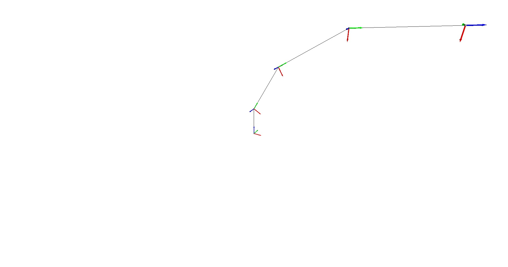

Note
Go to the end to download the full example code.
URDF Joints#
This example shows how to load a URDF description of a robot, set some joint angles and display relevant frames.
from pytransform3d.urdf import UrdfTransformManager
import pytransform3d.visualizer as pv
COMPI_URDF = """
<?xml version="1.0"?>
<robot name="compi">
<link name="linkmount"/>
<link name="link1"/>
<link name="link2"/>
<link name="link3"/>
<link name="link4"/>
<link name="link5"/>
<link name="link6"/>
<link name="tcp"/>
<joint name="joint1" type="revolute">
<origin xyz="0 0 0" rpy="0 0 0"/>
<parent link="linkmount"/>
<child link="link1"/>
<axis xyz="0 0 1.0"/>
</joint>
<joint name="joint2" type="revolute">
<origin xyz="0 0 0.158" rpy="1.570796 0 0"/>
<parent link="link1"/>
<child link="link2"/>
<axis xyz="0 0 -1.0"/>
</joint>
<joint name="joint3" type="revolute">
<origin xyz="0 0.28 0" rpy="0 0 0"/>
<parent link="link2"/>
<child link="link3"/>
<axis xyz="0 0 -1.0"/>
</joint>
<joint name="joint4" type="revolute">
<origin xyz="0 0 0" rpy="-1.570796 0 0"/>
<parent link="link3"/>
<child link="link4"/>
<axis xyz="0 0 1.0"/>
</joint>
<joint name="joint5" type="revolute">
<origin xyz="0 0 0.34" rpy="1.570796 0 0"/>
<parent link="link4"/>
<child link="link5"/>
<axis xyz="0 0 -1.0"/>
</joint>
<joint name="joint6" type="revolute">
<origin xyz="0 0.346 0" rpy="-1.570796 0 0"/>
<parent link="link5"/>
<child link="link6"/>
<axis xyz="0 0 1.0"/>
</joint>
<joint name="jointtcp" type="fixed">
<origin xyz="0 0 0.05" rpy="0 0 0"/>
<parent link="link6"/>
<child link="tcp"/>
</joint>
</robot>
"""
tm = UrdfTransformManager()
tm.load_urdf(COMPI_URDF)
joint_names = ["joint%d" % i for i in range(1, 7)]
joint_angles = [0, 0.5, 0.5, 0, 0.5, 0]
for name, angle in zip(joint_names, joint_angles):
tm.set_joint(name, angle)
fig = pv.figure("URDF")
fig.plot_graph(
tm, "compi", show_frames=True, show_connections=True,
whitelist=["link%d" % d for d in range(1, 7)], s=0.05)
fig.view_init()
if "__file__" in globals():
fig.show()
else:
fig.save_image("__open3d_rendered_image.jpg")
Total running time of the script: (0 minutes 0.443 seconds)